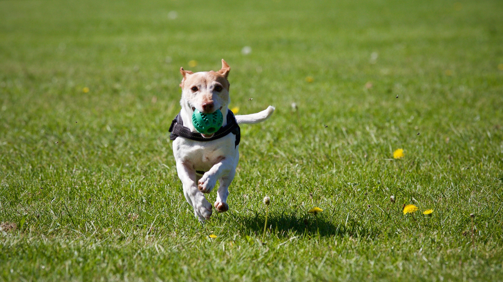
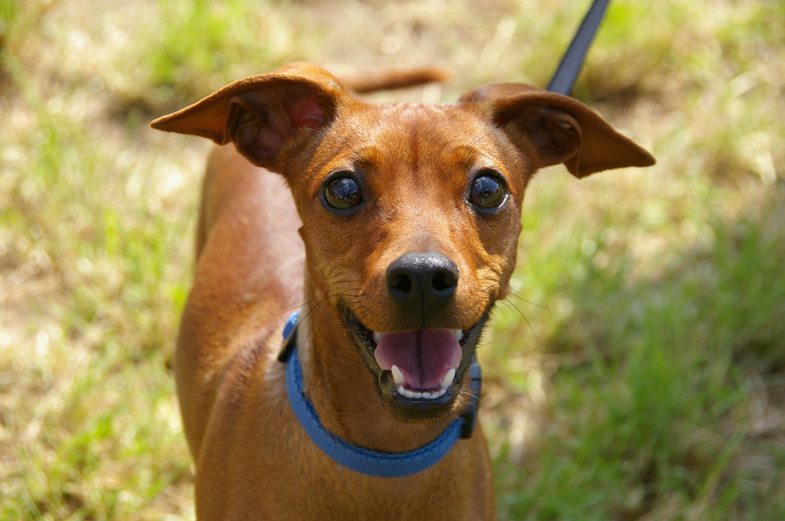
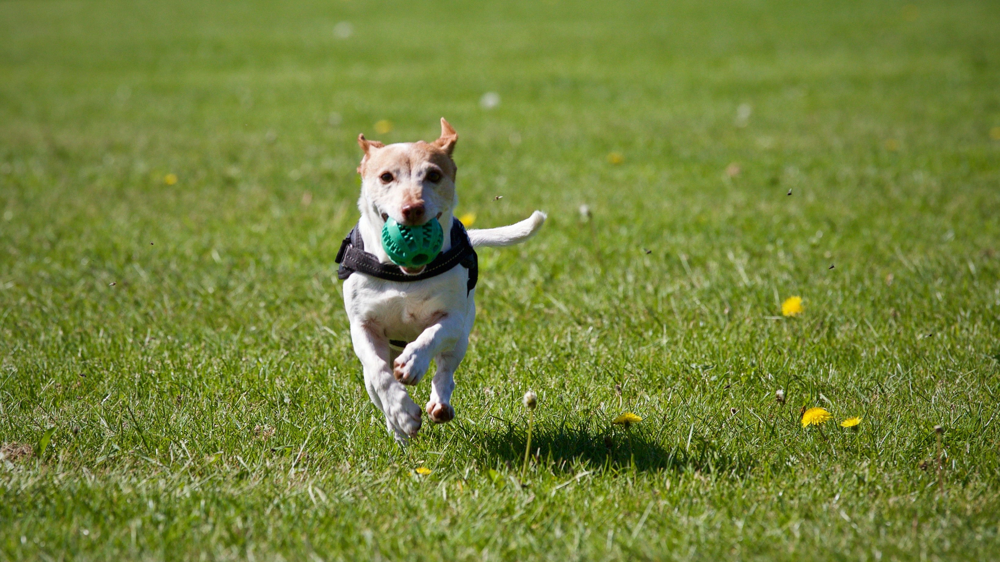
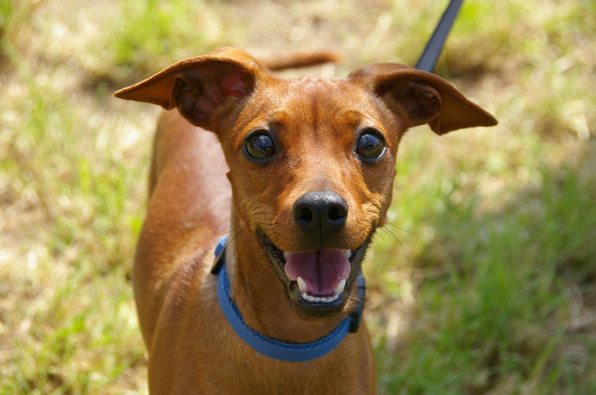

Curiosidades Caninas

Curiosidades retiradas do site Patas da Casa
O cachorro é um animal muito presentes em nossas vidas. Por terem altas doses de
companheirismo,
alegria e confiança, os cães são considerados os melhores amigos do homem e membros das
famílias
por onde passam. Por isso, se você já teve um amigo peludo em sua vida, certamente acredita
saber tudo sobre o universo canino. Afinal, é comum fazer uma breve pesquisa antes receber o
novo integrante da casa. Mas a verdade é que os cachorros não cansam de nos surpreender
todos os
dias, e fazer com que aprendamos cada vez mais sobre suas particularidades. Pensando nisso,
o
Patas da Casa separou 40 curiosidades sobre cachorros para te ajudar a entender algumas
atitudes
do seu amigo.
Muita gente se pergunta quantos dentes tem um cachorro: a dentição canina começa a se
desenvolver por volta de 2 a 3 semanas de vida. Com mais ou menos dois meses, o cão já
possui 28 dentes temporários. Depois da troca, ele fica com 42 dentes definitivos;
Cães são campeões em variedade de tamanhos, raças e formas;
A gestação de cachorro pode gerar, em média, 6 filhotes por vez. Mas, no caso das raças
de
porte grande, o número pode chegar a 15;
Os filhotes de cachorro nascem surdos, cegos e sem dentes. Mas, em menos de três semanas
de
vida, já começam a adquirir os sentidos.
O olfato dos cachorros é 1 milhão de vezes melhor do que o dos humanos;
Quer saber quantos anos vive um cachorro? Entre 10 a 13 anos, dependendo da raça e
tamanho,mas há relatos de cães que viveram muito mais;
A impressão do focinho do cachorro é tão única quanto a nossa digital, inclusive pode
ser
usada para identificar o animal de forma eficaz;
Os cachorros lambem o nariz para colocar o cheiro que sentem em suas bocas;
Os cachorros suam pelas patas;
O rabo do cachorro é uma extensão da sua coluna;
Por que os cachorros uivam? Essa é uma maneira de se comunicar à distância com outros
cães.
A frequência e o timbre dos uivos podem ser ouvidos de longe;
A castração de cachorro pode ajudar a prevenir alguns tipos de câncer, como o câncer de
mama
e o câncer de próstata;
Em 6 anos, uma fêmea pode gerar cerca de 66 filhotes. Por isso a castração é
fundamental!
Os cães fazem cocô em alinhamento com o campo magnético da Terra. Isso porque os
cachorros
são sensíveis a pequenas variações no campo. Eles fazem as necessidades com o corpo
alinhado
ao eixo Norte-Sul quando há poucas variações no magnetismo;
A forma como os cachorros enxergam não é a mesma que os humanos. Eles veem as cores em
uma
escala de azul e amarelo;
Os cachorros podem correr até 30 km/hora;
A temperatura normal de um cachorro é entre 38º e 39ºC. Temperaturas diferentes podem
significar alguma doença;
Cães podem ser tão espertos quanto uma criança de 2 anos de idade;
Como calcular a idade do cachorro não é difícil: por exemplo, 2 anos de um cachorro de
pequeno, médio e grande porte equivalem, respectivamente, a 25, 21 e 18 anos de um
humano;
Cães se enrolam como uma bola quando dormem para ficarem aquecidos e também para se
protegerem de predadores;
Cães só dormem de barriga para cima em lugares que se sente seguros;


 


